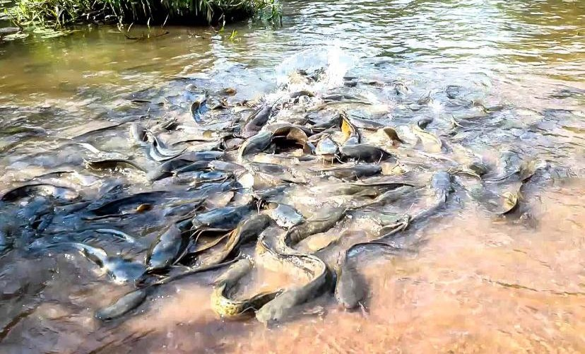

Bassins Sacrés de Dafra
Description
Les bassins sacrés de Dafra sont un site mystique et spirituel situé à la sortie de Bobo-Dioulasso. Ils sont considérés comme sacrés par les populations locales, en particulier les Bobo et les Sénoufo. On y trouve des silures sacrés (poissons-chats), protégés et vénérés. Le lieu est entouré de végétation dense, ce qui renforce son atmosphère de sanctuaire naturel.
Historique
Depuis des siècles, les bassins sacrés sont un lieu de pèlerinage et de sacrifice pour implorer la fertilité, la guérison ou la bénédiction des ancêtres. Les rituels y sont toujours pratiqués, notamment par les prêtres traditionnels. Selon la tradition, les silures ne doivent jamais être pêchés ni blessés, sous peine de graves malédictions. C’est un lieu à la fois sacré, touristique et écologique, très prisé des visiteurs en quête d’authenticité culturelle.